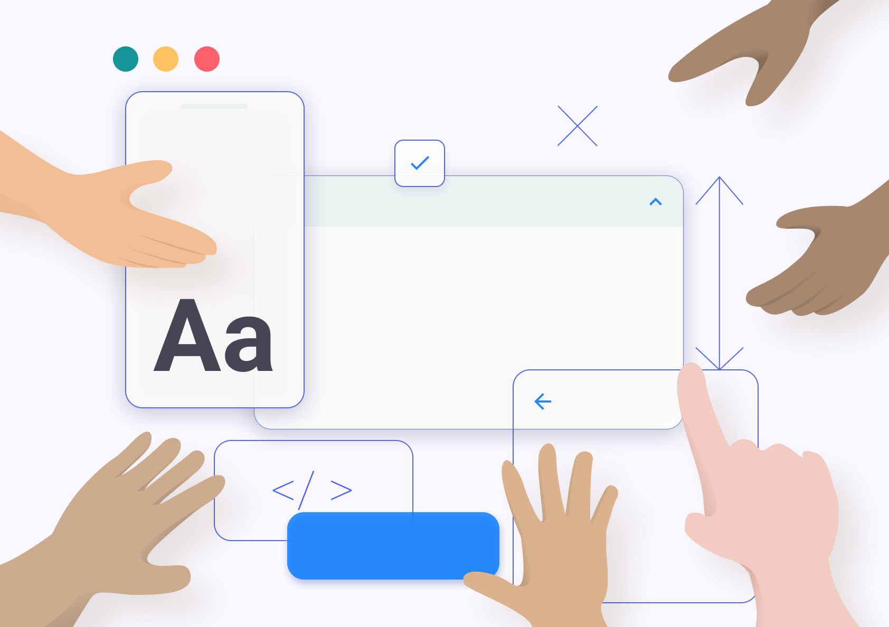
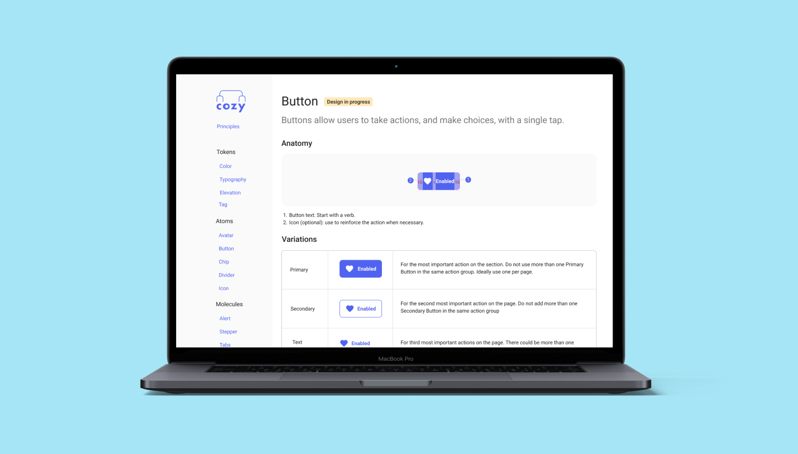

Cozy QuintoAndar Design System

Overview
QuintoAndar is a Brazilian real estate startup that grew exponentially in 2019. It needed a robust design system to scale fast sustainably while focusing on accessibility from the beginning.
My role
I was the only designer in a squad of 4 people. I had the help of a more experienced designer at the beginning of the project.
Goals
- Make components accessible
- Increase Design System adoption throughout the company
Impact
- From 77 colors to 27 AA labeled colors
- We've tripled the adoption

Problem
As the company grew from an e-commerce to rent properties to an ecosystem to rent, buy and sell properties, it was facing increasing pain for organizing components. It decided to form a DesignOps team and to create a squad focused on creating QuintoAndar's Design System. I was the only designer in this squad, focused in the following challenge:
How might we empower design and engineering teams to think systemically and strategically to speed up their workflow?
Research
We mapped all QuintoAndar's product pages to highlight any inconsistencies, from colors to interactions and with the help of other UX professional, we've interviewed prospective users of the design system: designers, developers and product managers from different squads. We concluded that:
- Designers struggled with the symbols in our Sketch template organization
- Developers had difficulties to find and reuse code and kept building new components
- Designers were not aware of the rules to use colors, typography and components in general
It seemed that forming a centralized team fully dedicated to implementing Cozy was all we needed to organize cross-platform interactions and ensure consistency.
We involved them in Design Critiques and feedback rounds. After this research, we prioritized what made the most sense for our context and planned the releases.
We were able to standardize some components; however, we faced other obstacles:
- Our team process was not fast enough to meet the demand of the 20+ teams;
- We had low engagement and adoption of already standardized components, sometimes because teams didn't know it was released or because they didn't know how to use it;
- Our components weren't taking into account all accessibility aspects.
We learned that our component decision process shouldn't be something imposed (the infamous top-down decision-making).
It was not about having a larger volume of components at high speed, but we needed to include more people in the process. That means providing the necessary tools for everyone to participate in building components (to achieve volume and speed) and decision-making (to get adoption and engagement).
Developing design principles
We've gathered the squad to define the principles of our Design System. From the keywords, we elaborated further on what exactly they meant and then ordered the principles from the most important, so we could follow them while taking difficult decisions.

Fostering accessibility
One of the requirements defined in the group was accessibility. We started a movement to see how accessible our experience was for everyone. We realized that we had a lot to improve, so we created a study group to research these topics and foster discussion.
We called people with disabilities to talk and understand what were the needs and difficulties they faced when trying to find a home and use digital products. After all, they were the ones that the final delivery was supposed to attend. We didn't just want to talk and test our products with people with disabilities, we wanted them to build with us and be part of our team.
It's very easy to design an experience by excluding some people without even realizing it. Living with people with disabilities in our daily lives has made accessibility and project practice inseparable. It became harder to forget to consider them all.
There is a famous phrase used by the community of people with disabilities which is: "All about us, nothing without us." These professionals help us to respect the accessibility principles since the birth of each component. With the adoption of the Design System for most of our products, making our entire experience accessible has become more feasible.

Making components accessible
It's no use taking isolated actions to make interfaces accessible. We have to teach people to think and apply accessibility.
One of the most commonly used buttons on our product did not pass the minimum contrast of text and background recommended by WCAG, it was not easy for people with dyslexia to read and had a touch area that was too small for mobile devices.

By standardizing components following WCAG guidelines, we were able to show teams what to consider when designing accessible experiences. So the process starts to get more organic.
Deliver
Cozy was the name of our Design System. To showcase our components we built a website based on Storybook to inform the guidelines we use to build interfaces at QuintoAndar. We've built a template documentation so other designers could build and propose new components and write its documentation.
Documentation structure
Every page has a table describes all states in a visual manner and prevents designers to forget to design a specific status:
- An anatomy image describes the spacing between elements inside components
- Use cases describe what's the intent of the component and what should not be done
- A table shows the different variations of the component and when to use them
- A list of do and don't also follow
- The status of the component clearly states if it's already implemented
The spaces are built onto a scale of multiples of 8.
We started designing options on Sketch. Then we would do a Design Critique where designers and developers would give their opinion about it. The component moved to a status where it would be on the playground where designers could try to use them on their design and test with real users and see if it was working well.
Components like alerts had 30 variations. We gathered them all and defined rules, eliminating variations not needed. We invited other designers to critique on it and the accessibility experts to review the requirements.
Before releasing the component we invited teams to test them first for some days and let us know any struggles or edge cases. This mechanism helped us release components that were adopted faster.
Driving adoption
To leverage adoption we partnered with strategic teams that would need new components urgently. We built a roadmap of components to build based off their planning and so the new flows they released were already using our components and consequently were following accessibility guidelines.
To drive communication, I created a program of ambassadors. These people would meet with the design system team and be responsible to drive adoption in their tribes, helping them with any struggles and spotting opportunities to use design system components.
In all new component, we delegated user testing to the other teams.
Fostering communication
Communication is the hardest part of making the Design System a success. Even with a website to document the components, we still had difficulty getting everyone to know about updates and new components. With a team of over 40 designers, it's always difficult to have visibility into all of Cozy's shortcomings for each squad. That's why we created an ambassador program: designers from each tribe responsible for driving Cozy's adoption in their squads, helping them with any struggles and spotting opportunities to use or create new components.
We've started shrinking the color palette. Now designers and teams have rules to base their decision to use color. We also made sure our colors had enough contrast when used for text.
Results
We still have a lot of work ahead of us, not all of our journey is fully accessible, but we have already achieved some victories. We went from 77 color variations to 27, with rules of use for each one. We reduce contrast problems, eliminate dozens of legacy components and make our components accessible to screen readers.
- We went from 77 colors to 26
- Reduced complexity
- The work has finished. Design Systems are living organism
Our Design System has brought not only greater consistency to our experience, but also greater interaction between designers and developers in the discussions. With that, we are building more robust products and prepared for the rapid changes that a startup needs to go through to establish itself.
Establishing a component system is an ongoing task that will accompany all stages of product maturity. Be careful not to spend so much time thinking and devising paths that may never get off the ground, start small and engage more people in the mission.